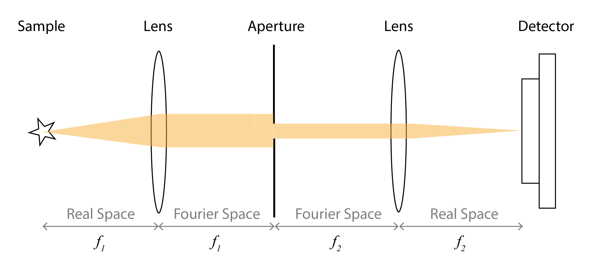

Basic Principles¶
The basic principle of any optical imaging modality can be explained with four components:
Probe
Light-matter iteration
Detection
Image formation.
Probe¶
We call probe the electromagnetic wave sent onto the sample to gather information about its composition. Optical imaging employs photons in visible (380-750 nm) and near-infrared (650-950 nm) range as probes, between short CT X-rays (10 pm-10 nm) and long MRI radio-frequency waves (meters) [34] (See Fig. 1). In optical tomography, one usually operates in the near-infrared window (also known as the optical window) where light can propagate several centimeters deep inside the biological tissue, as light at these wavelengths is less absorbed by water [10]. In fluorescence microscopy, one typically operates in the visible window with markers such as the green fluorescent protein and mCherry [35].
Light-Matter Interaction¶
As mentioned in Background, there are many types of light-matter interactions. Here, we introduce the most relevant ones for this thesis.
Absorption¶
Absorption contributes to the formation of contrast in optical imaging. When biological tissue is illuminated, it absorbs part of the photon energy from the light source. Absorption is characterized by the absorption coefficient \(\mu_a\). It is defined as the probability of photon absorption in a medium per unit path length [8]. The wavelength-dependent absorption coefficient can vary substantially across the spectrum [36]. It carries information about the sample and enables one to build an image from the absorption map. Brightfield optical microscopy is a representative example of a technique that relies on absorption. As the first and most basic microscopy technique widely used in biology and medicine, its contrast comes from the attenuation of the transmitted light in the sample. However, an absorption-related contrast remains limited due to the transparency of many biological structures, particularly, living cells.
In other cases, the absorbed photon energy may be further converted to either radiative (e.g., fluorescence, Raman photon) or non-radiative (e.g., heat) energy. These are called second-order processes. In the case of fluorescence, the absorbed energy by the fluorescent labels introduced into the sample is transformed and emitted as light again, but at a longer wavelength (known as Stoke’s shift) [35]. Representative modalities include fluorescence microscopy (nanometer-to-micrometer resolution) [35, 37] and several tomography techniques such as (emission) optical projection tomography (tens of micrometer resolution) [11] or fluorescence molecular tomography (hundreds of micrometer resolution) [38]. In the non-radiative case, when the heat is further converted to thermoelastic energy in the form of acoustic waves, one can perform photoacoustic imaging [8].
An alternative to absorption-based and intensity-based imaging is phase-contrast imaging [39]. It converts differences in the refractive index of different parts of the specimen into differences in brightness, which enhances the visibility of transparent objects (e.g., live cells), without staining or exogenous labels.
Scattering¶
Biological tissues are highly scattering media for the optical photons that propagate through them. The immediate effect of scattering is the attenuation of light; therefore, it restricts imaging depth. Here, we focus mainly on elastic scattering, where only the direction of photons changes while their energy remains unchanged [8]. The strength of scattering is characterized by the scattering coefficient \(\mu_s\). It describes how strongly a photon is scattered per unit length [8]. The direction of scattering, related to the likelihood of a photon to be scattered forward, is described by a quantity called anisotropy (\(g\in[0, 1]\)). There are two important concepts related to scattering,
the mean free path (MFP): \(1/\mu_s\), which represents the typical distance traveled between scattering events and is approximately 0.1 mm in soft tissue; and
the transport mean free path (TMFP): \(1/((1-g)\mu_s)\), which is approximately 1 mm in soft tissue [25]. It represents the typical distance after which the original direction of propagation is lost.
Within the mean free path, photons undergo none or minimal scattering events. These events can be considered random and coherently scattered (referred to as the ballistic regime) [6]. The intensity of light is minimally affected, the photons still remember their original orientation and carry information about the compositions of tissue structures. Most microscopy techniques, such as confocal microscopy (CFM) and two-photon microscopy (TFM), operate in this regime [35].
Beyond the mean free path but within the transport mean free path, as photons propagate deeper into the turbid tissue medium, multiple scattering events cause rapid intensity attenuation and strong divergence of the light. Beyond the transport mean free path, photon propagation transitions into a diffusive regime, where multiple scattering events statistically average out, enabling a deterministic description of light transport. Therefore, this regime is usually described by diffusion theory [40, 41]. Many tomographic techniques such as fluorescence molecular tomography (FMT) or diffuse optical tomography (DOT) [42] work in this regime.
Absorption and scattering both contribute to the attenuation of light inside tissue, which determines the penetration depth. This attenuation follows an exponential law known as the Beer-Lambert law [8]. The imaging depth of current optical tomographic techniques is limited to approximately 10 cm in soft tissue. Beyond this limit, optical fluence is significantly attenuated due to absorption and scattering, and very little useful information can be recovered [18].
Detection¶
The detection step entails defining the target and the detection mechanism. In this thesis, we mainly focus on the intensity of either transmitted or emitted light (or acoustic waves in the special case of photoacoustic imaging). To explain the detection procedure, we illustrate it with a generic \(4f\)-imaging system in Fig. 8.


Fig. 8 Illustration of a generic \(4f\)-imaging system. The sample is represented by a star. The light (in orange) is either transmitted (e.g., in the case of transmission OPT) or emitted (e.g., emission OPT or fluorescence microscopy). The focal lengths of the first and second lens are \(f_1\) and \(f_2\).¶
It has three main components: the lens system, the aperture, and the detector. The lenses focus light and form an image on the detector. Mathematically, a lens performs a Fourier (or inverse Fourier) transform between its front and back focal planes [43]. The magnification of the system is determined by the ratio \(f_2/f_1\) between the focal lengths of the two lenses.
The numerical aperture (NA) of an imaging system is determined by the refractive index of the immersion medium between the sample and the lens, together with the angular aperture. It defines how much light (brightness of the image) and how many diffraction orders (resolution of the image) are captured by the system. In a low-NA system such as OPT, the aperture is fairly narrow to allow for a large depth of field. The principles of ray optics and the paraxial approximation facilitate the understanding of light propagation in this case. This enables tomographic imaging of a sample by virtually seeing through it without actually slicing it. A high-NA system, such as super-resolution microscopy, targets high spatial resolution (with a small depth of field). More refined models based on wave optics are required to comprehend the behavior of the electric field and accurately describe the PSF in this case [44].
The detector is usually a camera that produces intensity-based images (or a highly sensitive photodiode that counts the number of photons, e.g. in MINFLUX) [35, 37]. In the special case of photoacoustic imaging, an ultrasound transducer serves as the detector to capture the amplitude of the ultrasonic waves [45].
Image Formation¶
Image formation refers to the procedure of postprocessing the raw data into a human-readable image. In the ballistic regime, where most fluorescence microscopes operate, a 2D image of the sample can be directly formed on the camera. This is because the minimally scattered photons still carry information about the internal structure of the sample. Further image processing and analysis steps (for instance, deconvolution [37]) can be applied to enhance the quality of the image. In SMLM systems, reconstruction algorithms are needed to estimate the location of molecules from the number of detected photons before forming the final image [46].
For tomographic techniques, the image formation is indirect and usually involves the solution of an inverse problem to produce a meaningful image. These techniques can be classified into categories based on their principles. The first category includes OPT and non-optical modalities such as X-ray CT and SPECT, where the rays in question pass through the sample in more or less straight lines that approximate projections [11]. There, one needs to employ a backprojection-type algorithm or solve a variational form of inverse problem to reconstruct the image of the 3D sample. The second category includes techniques that work in the diffuse regime (e.g., FMT, DOT, and PAT). There, photons undergo a substantial amount of scattering and have lost their initial directions, thus carrying too little information to directly generate an image. It is necessary to solve an inverse problem involving a model that describes photon transport (e.g., the diffusion equation) to recover the quantity of interest.
Key Aspects¶
Imaging depth and (spatial and temporal) resolution are two important aspects of biomedical optical imaging, and there exists a tradeoff between them. For instance, confocal microscopy can produce images of single cells at hundreds of nanometer resolution at depths up to 200 micrometers [37], while photoacoustic tomography is able to see centimeter-deep inside the whole body of small animals at a relaxed resolution of a few hundred micrometers [47].
Imaging Depth¶
Researchers have devoted significant efforts over the years to break the diffusion limit and achieve better imaging depth without sacrificing the resolution. One strategy is to reduce the strong scattering of photons, with OPT as a representative example. Invented in the early 2000s, OPT is able to produce three-dimensional volumetric images at tens of micrometer resolution for samples of millimeter or centimeter sizes [22]. This 3D technique allows for the rapid mapping of the tissue distribution of RNA and protein expression in intact embryos or organ systems [22]. It is therefore instrumental in studies of developmental biology or gene function [22]. The enabling technology is optical clearing, a process that renders turbid biological samples transparent [48] to reduce scattering. Consequently, light is minimally attenuated in its pathways and propagates through the sample almost like X-rays. The shortcoming of this technology is that OPT is constrained to image only ex vivo biological samples, unless they are naturally clear (e.g., zebrafish) [49, 50].
Another direction is to leverage the advantages of other modalities, a good example being photoacoustic imaging (PAI). Invented as a biomedical imaging technology between the 1990s and 2000s, it capitalizes on the photoacoustic effect. After illumination with a short-pulsed laser, the absorbed heat is converted to acoustic waves due to the thermoelastic expansion of the tissue. PAI overcomes the optical diffusion limit because acoustic waves scatter much less than photons in soft tissue [25]. For instance, acoustic-resolution photoacoustic microscopy (AR-PAM) is capable of imaging melanoma at a resolution of 15 micrometers and 3 mm depth; photoacoustic tomography (PAT) is able to image 3 centimeters deep into the tissue with an excellent resolution of 144 micrometers [51]. PAI combines excellent optical contrast with remarkable ultrasonic depth and significantly surpasses the performance of traditional optical imaging.
Recently, the rising field of wavefront shaping in complex media has demonstrated the unique possibility of deep tissue imaging and focusing at optical resolution through the control of light propagation [52]. The main idea is to retrieve information from scattered light through physical wavefront control via modulators and detectors, or through computational methods. Because the tissue-induced scattering is a deterministic linear process, information of the distorted wavefront can be measured and compensated to achieve larger imaging depth and better resolution. For instance, to image opaque samples with fluorescence microscopy, one can measure the tissue-induced aberrations and account for them by pre-shaping the excitation wavefront [53].
Resolution¶
Diffraction¶
Spatial resolution is mainly determined by diffraction. Optical diffraction refers to the phenomenon that an interference pattern arises when coherent light (e.g., a laser beam) passes through a finite-size aperture [35]. For instance, the image of a point source captured by a microscope, also known as the point spread function (PSF) or the impulse response of the microscope, is an Airy disk, which has a characteristic blob of high intensity in the center and concentric rings of much lower intensities around it [35, 46]. The resolution \(d\) of any optical-imaging system is determined by the maximal spatial frequency it can capture, in accordance with Abbe’s law [54]
where the wavelength of light is denoted by \(\lambda\) and NA is the numerical aperture of the microscope. In other words, the finest achievable resolution of conventional optical microscopy is on the order of the wavelength. For instance, in confocal microscopy and two-photon microscopy, it is approximately 200 nanometers.
Beyond the Diffraction Limit¶
While the resolution of traditional optical microscopes is sufficient to distinguish cells, it is insufficient to resolve crucial intracellular biochemical processes that occur at tens of nanometer scales. To break the diffraction barrier, super-resolution microscopy, such as stimulated emission depletion microscopy (STED, 1994) [31], photo-activated localization microscopy (PALM, 2006) [55] and stochastic optical reconstruction microscopy (STORM, 2006) [56], has been proposed. These technologies enable researchers to study the functions of subcellular organelles, which is essential to understand the mechanisms of diseases and disorders [29, 57]. The development of novel super-resolution microscopy techniques and the enhancement of their performance have been active areas of research. Two core aspects underpin this advancement: engineering the point spread function (PSF) of microscopes and developing new fluorescent probes with favorable photophysical properties.
The shape and size of the PSF is directly linked to the spatial resolution. Super-resolution techniques, such as STED, rely on the innovative design of the shape of the excitation beam via PSF engineering. Precisely, after having switched the fluorophores into their ON state and having formed a diffraction-limited PSF, STED uses a second depletion laser with a donut-shaped beam (with zero intensity in the center) to switch off the fluorophores at the periphery of the beam [31]. This yields an excitation spot significantly smaller than the diffraction limit, which enables spatial separation of neighboring fluorophores and achieves a resolution of approximately 20 nm.
One category of super-resolution techniques is single-molecule localization microscopy (SMLM) [46], such as STORM and PALM. They stochastically activate individual fluorophores, rather than all simultaneously, which enables temporal separation of single molecules and precise localization. The attainable spatial resolution is 10-40 nm in the lateral direction [6]. Temporal resolution depends on the rate of stochastic photoswitching and is typically limited, as super-resolved images require accumulating many frames. Ultimately, both the resolution of STED and the localization precision of SMLM are governed by the number of photons detected per fluorophore. Consequently, significant effort has been devoted to developing specialized fluorescent probes with superior photophysical and photochemical properties, including higher brightness, improved photostability, faster switching kinetics, reduced photofatigue, and lower toxicity.
In 2017, an emerging SMLM technique called MINFLUX (minimal photon fluxes) has been proposed in [32] to overcome the issue of limited number of detected photons. It uses four donut beams (as in STED) directly as excitation and has the potential to improve the lateral resolution to single-digit nanometer scales. The shape of the excitation beams and the illumination pattern (spatial arrangement of the beams) are crucial aspects of MINFLUX. This technique will be detailed in a dedicated chapter Optimal Excitation Patterns in MINFLUX via PSF Engineering.
In summary, understanding the fundamental principles of an imaging modality, including its capabilities in resolution and imaging depth, is essential. This forms the foundational step in addressing challenges for any optical imaging technology.